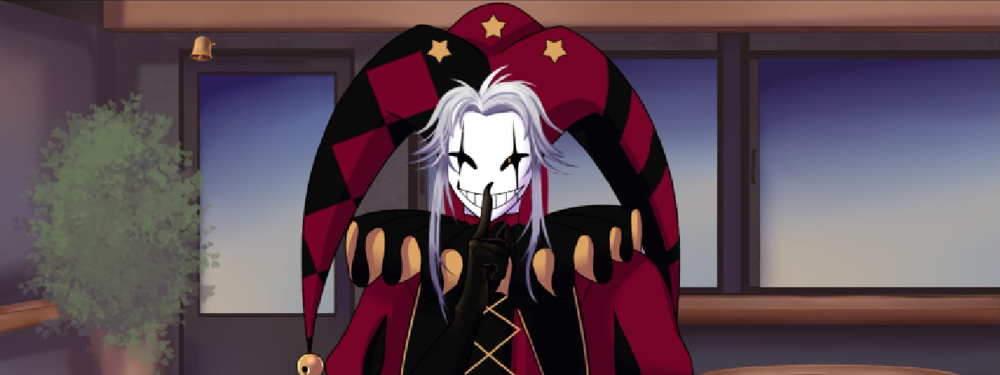
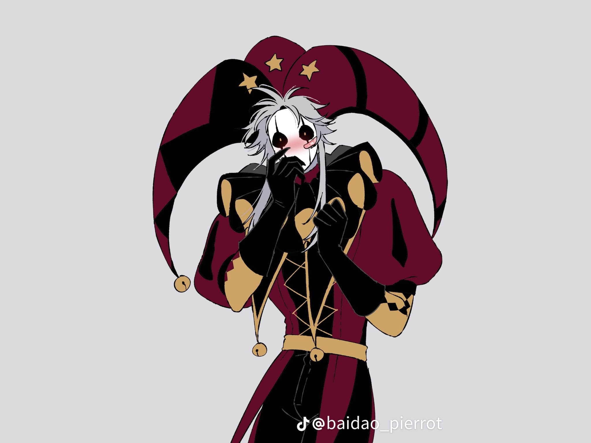
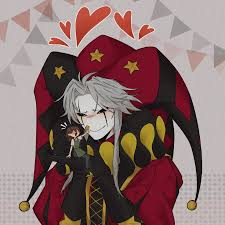

Pierrot es uno de los personajes más importantes de este circo.
Este se reconoce como un payaso melancólico con rasgos de "yandere" (obsesivo y posesivo), cuya apariencia y comportamiento mezclan la estética clásica de la Comedia del arte con elementos de terror indie.
Apariencia física:
- Estatura:
este personaje es extremadamente alto, midiendo aproximadamente 1.98 metros.
- Atuendo:
Viste un traje tradicional de Pierrot, generalmente en rojo y negro, con detalles de volantes en el cuello y botones grandes en el torso.
- Maquillaje y Rostro:
Su cara está pintada de blanco con detalles negros alrededor de los ojos. A menudo se le representa con una expresión triste o inexpresiva que oculta sus verdaderas intenciones.
Rasgos de Personalidad:
- Obsesivo y Posesivo:
Es un personaje tipo yandere, lo que significa que desarrolla un afecto extremo y peligroso hacia la persona, siendo capaz de marcarle el cuello para demaostrar que es de su propiedad.
- Manipulador:
Utiliza su apariencia inofensiva y melacólica para manipular emocionalmente a las personas que lo rodean en el circo.
- Dualidad:
Aunque puede parecer atento y protector, su naturaleza es perturbadora y violenta si siente que pierde el control.


Volver a la página inicial